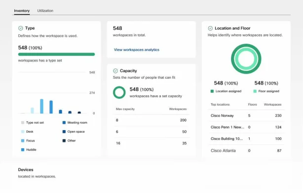

Cisco Workspace Advisor
My role
Product direction
Digital twin integration
AI room scanning UX
Challenge
IT admins manage meeting rooms they rarely visit.
When a room underperforms, a device list is all they have.
It can't show what's wrong in the room, or how to fix it.
How might we help admins picture a room they can't visit?



Learnings
Seeing beats reading
Admins understood a room's problems faster in 3D than in a regular text-based status.
Recognition builds trust
Admins act on recommendations when the digital twin looks like their real room.
Room scanning gets it there, with no manual setup.
Scanning needs care
Scanning uses the room's own cameras, which can feel invasive.
The flow had to make clear what's scanned, when, and why.